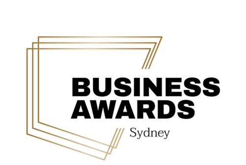
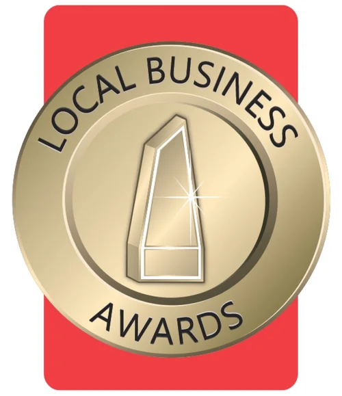

As Featured In
 Top 3 Wedding Caterer
Top 3 Wedding CatererDine In proudly recognised as a Top 3 Wedding Caterer in the Illawarra & Southern Highlands at the 2026 Wedding Industry Awards.

NSW Business Awards FinalistDine In proudly named a finalist in the NSW Business Awards, recognised for Excellence in Small Business across the state
 Deep In The Weeds (Podcast)
Deep In The Weeds (Podcast)Chef Brooke Silk shares her inspiring journey from fine dining to founding Dine In and Capture the Chef, highlighting how she redefined hospitality on her own terms in this nationally recognised food industry podcast.
In Sami Lukis' Nine Travel article, she discovers the hidden gem of Dine In
"Local chef Brooke Silk effortlessly transformed my holiday rental into a private restaurant, serving a delicious meal and leaving the kitchen spotless. A fabulous dinner party without lifting a finger!"
 Illawarra Mercury Covering World Food Championship
Illawarra Mercury Covering World Food ChampionshipChef Brooke Silk wins her second Australian dessert title with a ricotta doughnut creation, earning a spot at the World Food Championships in the US.

Illawarra Business Award WinnerDine In proudly recognised as a Winner in the prestigious Illawarra Local Business Awards, celebrating excellence in our local community.
An in-depth newspaper feature where Chef Brooke Silk shares the inspiring culinary journey behind Dine In's exquisite dining experiences.
 ABC Illawarra radio
ABC Illawarra radioChef Brooke Silk discusses sustainable cooking and local produce during her 'Paddock to Plate' segment on ABC Illawarra radio.